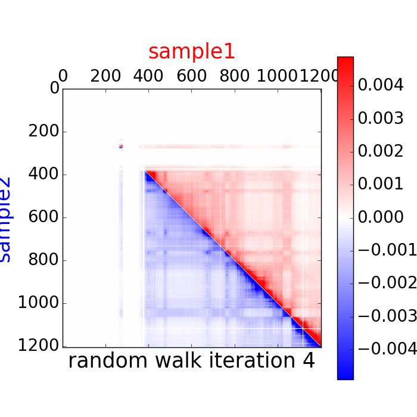
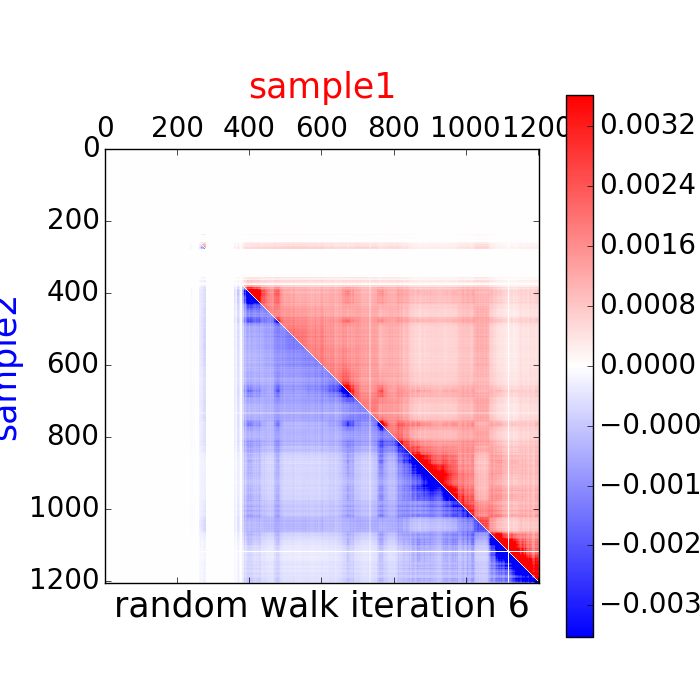
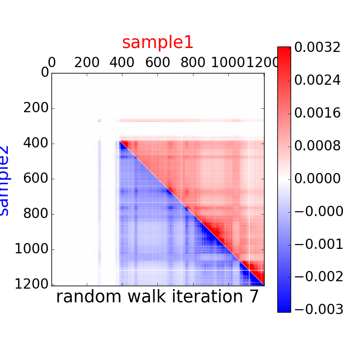

Reproducibility report
chr21. sample1 vs sample2
Report generated 2017-06-01 09:03:54 by GenomeDISCO (DIfferences in Smoothed COntact maps)
Sequencing stats
| |
sample1 |
sample2 |
| Sequencing depth |
0.990285 M |
1.493638 M |
Reproducibility analysis
Reproducibility score = 0.941622590451

Distance dependence

Random walk matrices
 |
 |
 |
 |
 |